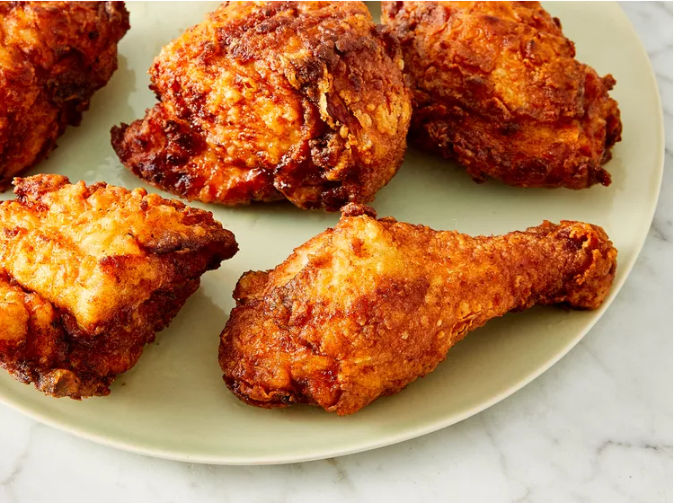

Crispy Fried Chicken
Home

Description
The juiciest, most flavorful, crispiest chicken around.
Ingredients
- Chicken
- Buttermilk
- Flour
- Seasonings
- Oil
Workflow
- Make the Breading:
Combine the flour, paprika, salt, and pepper in a zip-top bag. Seal the bag and shake until well-combined.
- Dredge the Chicken:
Pour buttermilk into a shallow bowl, then dip the chicken (on both sides) until it's completely soaked in buttermilk.
Place the soaked chicken in the bag with flour mixture, seal, and shake well to coat. Transfer the coated chicken to a baking sheet, and cover.
Allow the flour coating to become a paste-like consistency.
- Fry the Chicken:
Pour the oil in a skillet and bring it to high heat.
Brown the chicken on both sides, then reduce the heat, cover the skillet, and cook for about 30 minutes.
Remove the cover, return the heat to high, and fry until extra crispy. Drain the chicken on paper towels.